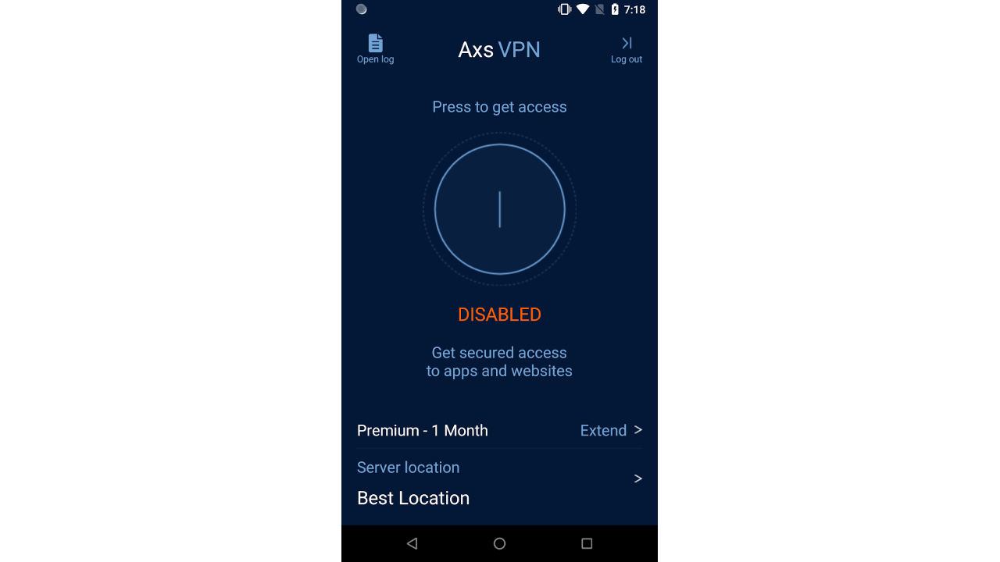

Axs VPN - Comprehensive Web Privacy and Unlimited Access

I developed the Axs VPN app, providing users with complete web privacy. The app enables safe internet browsing, access to favorite applications, and unlocking restricted content from anywhere in the world. Key features include:
- Global Access: Users can watch movies, listen to music, and access all blocked resources without geographical restrictions.
- Enhanced Privacy: Axs VPN ensures strict privacy with a no-logs policy, meaning user activity is neither stored nor tracked, guaranteeing complete anonymity.
- Secure Browsing: The app provides secure browsing for users, protecting their personal data from unauthorized access.
Axs VPN was designed with user convenience in mind, offering a simple and intuitive interface while delivering robust privacy protection features. The app meets the needs of users seeking seamless access to content worldwide.
Back